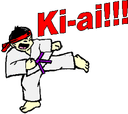
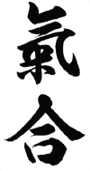

Beginnende karatekaís kijken vaak even vreemd op als ze voor het eerst de schreeuw van de 'oudere' karatekaís horen. Indrukwekkend, angstaanjagend en overwelmend, zullen de indrukken zijn. "Moet ik dat ook doen?" is dan vaak de volgende reactie. Na een paar lessen roep je dan, nog een beetje onwennig, "ki" of "kiai", net zo hard dat je het zelf nog nËt kan horen, maar je buurman met die blauwe band overstemt dit met een harde "TS»»»»»»»H!!!". Tegen de tijd dat je opgaat voor je eerste examen, brul je misschien al evenlustig mee, of misschien duurt het ook nog wel een examen langer. Ach, het maakt ook niet zo veel uit, want het komt toch vanzelf wel, let maar op! Waar ik het nu eigenlijk over wil hebben is wat die Ki-ai, zoals die schreeuw genoemd wordt, nou eigenlijk inhoudt...
Het kopje zegt het al, de Ki-ai is niet zomaar een schreeuw om de tegenstander te verschrikken of angst in te boezemen. Het is veel meer dan dat. Om dit uit te kunnen leggen, moet je eerst wat meer weten over de oosterse denkwijze met betrekking tot energie. Hier in het westen zijn we gewend om onszelf op te delen in een lichamelijk en geestelijk deel. Met energie bedoelen we dan het lichamelijk deel, dus spierenergie. Maar naast deze lichamelijke energie wordt er in het oosten, met name binnen de door boeddhisme beÔnvloedde gebieden, nog een ander soort energie mogelijk geacht: een soort innerlijke energie. Hoewel de laatste decennia hierin een ommekeer plaatsvindt, kennen we in het westen op geestelijk gebied alleen een soort energie die we beter kennen als "geesteswil" of doorzetingsvermogen. Voor westerlingen is een 'innerlijke energie' vaak nog moeilijk te vatten.
In het oosten wordt de mens niet gezien als een gespleten wezen. Lichaam en geest worden in het oosterse denken als een onscheidbare eenheid gezien. Hierin heeft het idee "energie" zowel een lichamelijk als een geestelijk aspect. Onze geest is in staat een soort innerlijke energie te bundelen en wel op zo'n manier dat het van invloed is op onze lichamelijke vermogens. De krachten die we als mens dan kunnen ontwikkelen, zijn groter naarmate we meer controle kunnen krijgen op deze innerlijke energie. In een zeer gevorderd stadium, kun je met deze energie dingen bereiken die met de 'normale' natuurwetten onverklaarbaar zijn. In de tijd dat ik Pencak Silat (Indonesische krijgskunst) beoefende, heb ik mensen dingen zien doen die me vandaag nog steeds verbazen.Misschien heb je zelf ook wel eens de wonderlijke televisiebeelden gezien van de Shaolin-monniken die bijvoorbeeld met hun keel op een aantal speerpunten de stokken van deze speren kunnen ombuigen! Als jij of ik zoiets zou doen, zou dat zeer waarschijnlijk onze laatste actie zijn...
Deze energie wordt doorgaans aangeduid met de Japanse term "Ki" (in het Chinees "Chi", denk maar aan "Tai-chi"). Ieder mens heeft deze innerlijke, mentale energie in zich. De energie is echter verspreid. Bundeling van de Ki vergt een intensieve en langdurige oefening. De totale Ki kan in het lichaam gebundeld worden. Deze bundeling heeft tot gevolg dat de desbetreffende persoon meer macht krijgt over zijn lichaam en zijn handelingen. In de praktijk van (bijvoorbeeld) het Karate, betekent dit dat hij sneller en efficiÎnter aanvallen van tegenstanders kan afwenden.
De bundeling van Ki vindt plaats in het lichaamscentrum, dat zich zou bevinden even onder de navel, in het zwaartepunt van het lichaam. Dit centrum wordt in de oosterse terminologie de Hara genoemd. In de Hara moet de Ki gebundeld worden. Het Japanse woord "Hara" betekent eigenlijk "buik", hetgeen makkelijk tot misverstanden kan leiden, want het is in geen geval hetzelfde! De Hara is geen orgaan, maar een energiecentrum dat niet waarneembaar is, wel ervaarbaar. Pas na langdurige training wordt de Hara als energiecentrum duidelijk.

Het woord Ki betekent echter meer dan alleen energie. Het heeft tevens de betekenis van lucht, atmosfeer en adem. Innerlijke energie en ademhaling hangen dan ook heel direct met elkaar samen. Een juiste ademhaling is een eerste stap naar de bundeling van de innerlijke energie. En ook het begrip Hara hangt weer met beide genoemde begrippen samen. De ademhaling is geen oppervlakkige luchttoevoer die we in ons dagelijks leven kennen. Het is een diepe, geconcentreerde, beheerste vorm van ademhaling, die zijn centrum eveneens in de Hara, de onderbuik heeft liggen.Wat is Ki-ai nu eigenlijk? De betekenis van het woord valt uiteen in twee aparte onderdelen die door twee karakters (Chinese/Japanse beeldtekens, ideogrammen) worden weergegeven. Het eerste karakter, Ki, is hiervoor al uitvoerig besproken en betekent dus zoiets als "energie", "adem", maar ook "geest" en "wil". Vervolgens Ai dat een verbuiging is van het werkwoord "awaseru" dat "verenigen" betekent. Je zou Ki-ai dus zeer algemeen kunnen vertalen met "de vereniging van twee willen/geesten", waarbij dan de sterkere, de zwakkere controleert.
Hoe is dit te rijmen met de schreeuw die we zo vaak in het Karate uitstoten? Door een geconcentreerde kracht kan controle op een tegenstander worden uitgeoefend, op voorwaarde dat die kracht sterker is dan die van de tegenstander. Die uitstraling kan zo sterk zijn dat de tegenstander bij voorbaat van zijn voornemen aan te vallen afziet. Een Ki-ai is dus niet zomaar een schreeuw ter afschrikking van de tegenstander. Het is veel meer een bundeling van die innerlijke energie die tegelijk met die lichamelijke energie (eenheid van lichaam en geest) de uiteindelijke energie vormt bij het inzetten van een aanval of verdediging. Dat we bij een dergelijke "schreeuw" met meer te maken hebben dan alleen een luchtuitstoting, mag blijken uit het feit dat in het oosten zelfs volledige scholen zijn ontstaan, die de kunst van het Ki-ai hebben ontwikkeld.
Het moge nu dus duidelijk zijn: het gaat om de bundeling van Ki, die in de onderbuik Hara plaatsvindt. Een Ki-ai begint dus niet in de keel, maar diep in de onderbuik. Iedere spanning die op de weg naar boven kan ontstaan, is een belemmering van deze bundeling. In geen enkel lichaamsdeel mag daarom spanning ontstaan. In de praktijk komt er meestal niet zoveel van een dergelijke buik-Ki-ai terecht. Enfin: je zal dus nog wat jaartjes moeten oefenenÖ
Osu!
Meer lezen??? Check dan deze site: